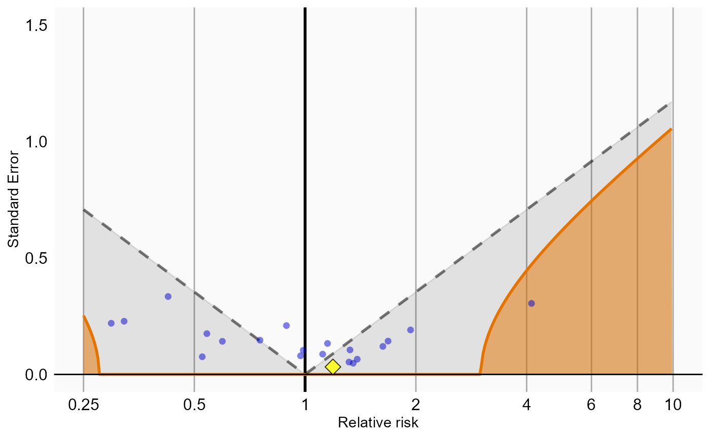

Running multiple analyses at once using the SelfControlledCaseSeries package
Martijn J. Schuemie
2021-07-22
Source:vignettes/MultipleAnalyses.Rmd
MultipleAnalyses.RmdIntroduction
In this vignette we focus on running several different analyses on several exposure-outcome pairs This can be useful when we want to explore the sensitivity to analyses choices, include controls, or run an experiment similar to the OMOP experiment to empirically identify the optimal analysis choices for a particular research question.
This vignette assumes you are already familiar with the SelfControlledCaseSeries package and are able to perform single studies. We will walk through all the steps needed to perform an exemplar set of analyses, and we have selected the well-studied topic of the effect of nonsteroidal anti-inflammatory drugs (NSAIDs) on gastrointestinal (GI) bleeding-related hospitalization. For simplicity, we focus on one NSAID: diclofenac. We will execute various variations of an analysis for the primary exposure pair and a large set of negative control exposures.
General approach
The general approach to running a set of analyses is that you specify all the function arguments of the functions you would normally call, and create sets of these function arguments. The final outcome models as well as intermediate data objects will all be saved to disk for later extraction.
An analysis will be executed by calling these functions in sequence:
When you provide several analyses to the SelfControlledCaseSeries package, it will determine whether any of the analyses and exposure-outcome pairs have anything in common, and will take advantage of this fact. For example, if we specify several exposure-outcome pairs with the same outcome, the data for the outcome will be extracted only once.
The function arguments you need to define have been divided into four groups:
- Hypothesis of interest: arguments that are specific to a hypothesis of interest, in the case of the self-controlled case series this is a combination of exposure and outcome.
- Analyses: arguments that are not directly specific to a hypothesis of interest, such as the washout window, whether to adjust for age and seasonality, etc.
- Arguments that are the output of a previous function in the
SelfControlledCaseSeriespackage, such as theSccsIntervalDataargument of thecreateSccsIntervalDatafunction. These cannot be specified by the user. - Arguments that are specific to an environment, such as the connection details for connecting to the server, and the name of the schema holding the CDM data.
Preparation for the example
We need to tell R how to connect to the server where the data are. SelfControlledCaseSeries uses the DatabaseConnector package, which provides the createConnectionDetails function. Type ?createConnectionDetails for the specific settings required for the various database management systems (DBMS). For example, one might connect to a PostgreSQL database using this code:
connectionDetails <- createConnectionDetails(dbms = "postgresql",
server = "localhost/ohdsi",
user = "joe",
password = "supersecret")
outputFolder <- "s:/temp/sccsVignette2"
cdmDatabaseSchema <- "my_cdm_data"
cohortDatabaseSchema <- "my_cohorts"
options(sqlRenderTempEmulationSchema = NULL)
cdmVersion <- "5"The last three lines define the cdmDatabaseSchema and cohortDatabaseSchema variables, as well as the CDM version. We’ll use these later to tell R where the data in CDM format live, where we want to store the (outcome) cohorts, and what version CDM is used. Note that for Microsoft SQL Server, databaseschemas need to specify both the database and the schema, so for example cdmDatabaseSchema <- "my_cdm_data.dbo".
We also need to prepare our exposures and outcomes of interest. The drug_era table in the OMOP Common Data Model already contains prespecified cohorts of users at the ingredient level, so we will use that for the exposures. For the outcomes, we want to restrict our analysis only to those events that are recorded in an inpatient setting, so we will need to create a custom cohort table. For this example, we are only interested in GI bleed (concept ID 192671) .
We create a text file called vignette.sql with the following content:
/***********************************
File vignette.sql
***********************************/
IF OBJECT_ID('@cohortDatabaseSchema.@outcomeTable', 'U') IS NOT NULL
DROP TABLE @cohortDatabaseSchema.@outcomeTable;
SELECT 1 AS cohort_definition_id,
condition_start_date AS cohort_start_date,
condition_end_date AS cohort_end_date,
condition_occurrence.person_id AS subject_id
INTO @cohortDatabaseSchema.@outcomeTable
FROM @cdmDatabaseSchema.condition_occurrence
INNER JOIN @cdmDatabaseSchema.visit_occurrence
ON condition_occurrence.visit_occurrence_id = visit_occurrence.visit_occurrence_id
WHERE condition_concept_id IN (
SELECT descendant_concept_id
FROM @cdmDatabaseSchema.concept_ancestor
WHERE ancestor_concept_id = 192671 -- GI - Gastrointestinal haemorrhage
)
AND visit_occurrence.visit_concept_id IN (9201, 9203);Note for CDM V4 visit_concept_id should be place_of_service_concept_id, and cohort_definition_id should be cohort_concept_id.
This is parameterized SQL which can be used by the SqlRender package. We use parameterized SQL so we do not have to pre-specify the names of the CDM and result schemas. That way, if we want to run the SQL on a different schema, we only need to change the parameter values; we do not have to change the SQL code. By also making use of translation functionality in SqlRender, we can make sure the SQL code can be run in many different environments.
library(SqlRender)
sql <- readSql("vignette.sql")
sql <- render(sql,
cdmDatabaseSchema = cdmDatabaseSchema,
cohortDatabaseSchema = cohortDatabaseSchema)
sql <- translate(sql, targetDialect = connectionDetails$dbms)
connection <- connect(connectionDetails)
executeSql(connection, sql)In this code, we first read the SQL from the file into memory. In the next line, we replace the two parameter names with the actual values. We then translate the SQL into the dialect appropriate for the DBMS we already specified in the connectionDetails. Next, we connect to the server, and submit the rendered and translated SQL.
Specifying hypotheses of interest
The first group of arguments define the exposure and outcome. Here we demonstrate how to create a list of exposure-outcome pairs:
negativeControls <- c(705178, 705944, 710650, 714785, 719174, 719311, 735340, 742185,
780369, 781182, 924724, 990760, 1110942, 1111706, 1136601,
1317967, 1501309, 1505346, 1551673, 1560278, 1584910, 19010309,
40163731)
diclofenac <- 1124300
ppis <- c(911735, 929887, 923645, 904453, 948078, 19039926)
exposureOutcomeList <- list()
for (exposureId in c(diclofenac, negativeControls)){
exposureOutcome <- createExposureOutcome(exposureId = exposureId,
outcomeId = 1,
prophylactics = ppis)
exposureOutcomeList[[length(exposureOutcomeList) + 1]] <- exposureOutcome
}We defined the outcome of interest to be the custom cohort with ID 1 we defined in the SQL above. The exposures include diclofenac (concept ID 1124300) and a large number of negative control exposures. We furthermore specify a custom variable prophylactics that contains the concept IDs of drugs that are used in preventing the outcome of interest, in this case proton pump inhibitors (PPIs).
A convenient way to save exposureOutcomeList to file is by using the saveExposureOutcomeList function, and we can load it again using the loadExposureOutcomeList function.
Specifying analyses
The second group of arguments are not specific to a hypothesis of interest, and comprise the majority of arguments. For each function that will be called during the execution of the analyses, a companion function is available that has (almost) the same arguments. For example, for the fitSccsModel() function there is the createFitSccsModelArgs() function. These companion functions can be used to create the arguments to be used during execution:
getDbSccsDataArgs1 <- createGetDbSccsDataArgs(
useCustomCovariates = FALSE,
deleteCovariatesSmallCount = 100,
studyStartDate = "",
studyEndDate = "",
exposureIds = c(),
maxCasesPerOutcome = 1000)
createStudyPopulationArgs1 <- createCreateStudyPopulationArgs(
naivePeriod = 180,
firstOutcomeOnly = FALSE)
covarExposureOfInt <- createEraCovariateSettings(
label = "Exposure of interest",
includeEraIds = "exposureId",
start = 1,
end = 0,
endAnchor = "era end")
createSccsIntervalDataArgs1 <- createCreateSccsIntervalDataArgs(
eraCovariateSettings = covarExposureOfInt)
fitSccsModelArgs <- createFitSccsModelArgs()Any argument that is not explicitly specified by the user will assume the default value specified in the function. Note that for several arguments for concept or cohort definition IDs we can use the name of a variable in the exposureOutcome objects. In this case, we defined the argument includeEraIds to get the value of the exposureId variable.
We can now combine the arguments for the various functions into a single analysis:
sccsAnalysis1 <- createSccsAnalysis(analysisId = 1,
description = "Simplest model",
getDbSccsDataArgs = getDbSccsDataArgs1,
createStudyPopulationArgs = createStudyPopulationArgs1,
createSccsIntervalDataArgs = createSccsIntervalDataArgs1,
fitSccsModelArgs = fitSccsModelArgs)Note that we have assigned an analysis ID (1) to this set of arguments. We can use this later to link the results back to this specific set of choices. We also include a short description of the analysis.
We can easily create more analyses, for example by including adjustments for age and seasonality, or for including other drugs in the model:
covarProphylactics <- createEraCovariateSettings(
label = "Prophylactics",
includeEraIds = "prophylactics",
start = 1,
end = 0,
endAnchor = "era end")
createSccsIntervalDataArgs2 <- createCreateSccsIntervalDataArgs(
eraCovariateSettings = list(covarExposureOfInt,
covarProphylactics))
sccsAnalysis2 <- createSccsAnalysis(
analysisId = 2,
description = "Including prophylactics",
getDbSccsDataArgs = getDbSccsDataArgs1,
createStudyPopulationArgs = createStudyPopulationArgs1,
createSccsIntervalDataArgs = createSccsIntervalDataArgs2,
fitSccsModelArgs = fitSccsModelArgs)
ageSettings <- createAgeCovariateSettings(ageKnots = 5)
seasonalitySettings <- createSeasonalityCovariateSettings(seasonKnots = 5)
covarPreExp <- createEraCovariateSettings(
label = "Pre-exposure",
includeEraIds = "exposureId",
start = -30,
end = -1,
endAnchor = "era start")
createSccsIntervalDataArgs3 <- createCreateSccsIntervalDataArgs(
eraCovariateSettings = list(covarExposureOfInt,
covarPreExp,
covarProphylactics),
ageCovariateSettings = ageSettings,
seasonalityCovariateSettings = seasonalitySettings,
eventDependentObservation = TRUE)
sccsAnalysis3 <- createSccsAnalysis(
analysisId = 3,
description = "Including prophylactics, age, season, pre-exposure, and censoring",
getDbSccsDataArgs = getDbSccsDataArgs1,
createStudyPopulationArgs = createStudyPopulationArgs1,
createSccsIntervalDataArgs = createSccsIntervalDataArgs3,
fitSccsModelArgs = fitSccsModelArgs)
covarAllDrugs <- createEraCovariateSettings(
label = "Other exposures",
excludeEraIds = "exposureId",
stratifyById = TRUE,
start = 1,
end = 0,
endAnchor = "era end",
allowRegularization = TRUE)
createSccsIntervalDataArgs4 <- createCreateSccsIntervalDataArgs(
eraCovariateSettings = list(covarExposureOfInt,
covarPreExp,
covarAllDrugs),
ageCovariateSettings = ageSettings,
seasonalityCovariateSettings = seasonalitySettings,
eventDependentObservation = TRUE)
sccsAnalysis4 <- createSccsAnalysis(
analysisId = 4,
description = "Including all other drugs",
getDbSccsDataArgs = getDbSccsDataArgs1,
createStudyPopulationArgs = createStudyPopulationArgs1,
createSccsIntervalDataArgs = createSccsIntervalDataArgs4,
fitSccsModelArgs = fitSccsModelArgs)These analyses can be combined in a list:
sccsAnalysisList <- list(sccsAnalysis1, sccsAnalysis2, sccsAnalysis3, sccsAnalysis4)A convenient way to save sccsAnalysisList to file is by using the saveSccsAnalysisList function, and we can load it again using the loadSccsAnalysisList function.
Exposure and outcome selection strategies
Often we would like to evaluate different definitions of the exposure and/or outcome. We could include these by created extra exposure-outcome pairs, but that would mean that all defined analyses would be executed against these variations of the definitions, and this may not be what we want. Perhaps we would like to define just a single sensitivity analyses with a different outcome definition, in which case we could argue that the strategy of selecting the outcome becomes part of the analysis.
In such a case, we can define the multiple strategies using a list:
outcomeIds = list(narrowDefinition = 1,
broadDefinition = 2)
exposureOutcome <- createExposureOutcome(
exposureId = 1124300,
outcomeId = outcomeIds)When we specify an analysis, we can then refer to one definition or the other:
sccsAnalysisA <- createSccsAnalysis(
analysisId = 1,
description = "Simplest model, using narrow def.",
outcomeType = "narrowDefinition",
getDbSccsDataArgs = getDbSccsDataArgs1,
createStudyPopulationArgs = createStudyPopulationArgs1,
createSccsIntervalDataArgs = createSccsIntervalDataArgs1,
fitSccsModelArgs = fitSccsModelArgs)
sccsAnalysisB <- createSccsAnalysis(
analysisId = 2,
description = "Simplest model, using broad def.",
outcomeType = "broadDefinition",
getDbSccsDataArgs = getDbSccsDataArgs1,
createStudyPopulationArgs = createStudyPopulationArgs1,
createSccsIntervalDataArgs = createSccsIntervalDataArgs1,
fitSccsModelArgs = fitSccsModelArgs)
sccsAnalysisList2 <- list(sccsAnalysisA, sccsAnalysisB)In this example, the first analysis (analysisID = 1) will use cohort definition 1 as outcome, whilst the second analysis analysis (analysisID = 2) will use cohort definition 2 as outcome.
The same mechanism can be used to specify types for the exposureId.
Executing multiple analyses
We can now run the analyses against the hypotheses of interest using the runScsAnalyses()function. This function will run all specified analyses against all hypotheses of interest, meaning that the total number of outcome models is length(sccsAnalysisList) * length(exposureOutcomeList).
result <- runSccsAnalyses(
connectionDetails = connectionDetails,
cdmDatabaseSchema = cdmDatabaseSchema,
exposureDatabaseSchema = cdmDatabaseSchema,
exposureTable = "drug_era",
outcomeDatabaseSchema = cohortDatabaseSchema,
outcomeTable = outcomeTable,
cdmVersion = cdmVersion,
outputFolder = outputFolder,
combineDataFetchAcrossOutcomes = TRUE,
exposureOutcomeList = exposureOutcomeList,
sccsAnalysisList = sccsAnalysisList,
getDbSccsDataThreads = 1,
createStudyPopulationThreads = 3,
createSccsIntervalDataThreads = 3,
fitSccsModelThreads = 4,
cvThreads = 10)In the code above, we provide the arguments for connecting to the database, which schemas and tables to use, as well as the analyses and hypotheses of interest. The outputFolder specifies where the outcome models and intermediate files will be written. We also instruct SelfControlledCaseSeries to use multiple threads for various stages in the analyses, meaning these will be executed in parallel on multiple CPUs in the computer. Multithreading can significantly reduce execution time, but will require more system resources such as memory and temporary disk space.
Restarting
If for some reason the execution was interrupted, you can restart by re-issuing the runSccsAnalyses() command. Any intermediate and final products that have already been completed and written to disk will be skipped.
Retrieving the results
The result of the runSccsAnalyses() is a data frame with one row per exposure-outcome-analysis combination. It provides the file names of the intermediate and end-result files that were constructed. For example, we can retrieve the fitted model for the combination of our drug of interest, outcome, and first analysis:
sccsModelFile <- result$sccsModelFile[result$exposureId == 1124300 &
result$outcomeId == 1 &
result$analysisId == 1]
sccsModel <- readRDS(file.path(outputFolder, sccsModelFile))
sccsModel## $estimates
## covariateId logRr originalCovariateId originalCovariateName
## 1 1000 0.2447448 1124300 Diclofenac
## covariateName logLb95 logUb95 seLogRr
## 1 Exposure of interest: Diclofenac 0.2105088 0.2787271 0.01740293
##
## $priorVariance
## [1] NA
##
## $status
## [1] "OK"
##
## $metaData
## $metaData$getDbCall
## getDbSccsData(connectionDetails = list(dbms = "pdw", server = "JRDUSAPSCTL01",
## port = "17001", oracleDriver = "thin"), cdmDatabaseSchema = "cdm_truven_mdcd_v780.dbo",
## oracleTempSchema = "cdm_truven_mdcd_v780.dbo", outcomeDatabaseSchema = "scratch.dbo",
## outcomeTable = "mschuemi_sccs_vignette", outcomeIds = 1,
## exposureDatabaseSchema = "cdm_truven_mdcd_v780.dbo", exposureTable = "drug_era",
## exposureIds = NULL, useCustomCovariates = FALSE, customCovariateDatabaseSchema = "cdm_truven_mdcd_v780.dbo",
## customCovariateTable = "cohort", customCovariateIds = NULL,
## useNestingCohort = FALSE, nestingCohortDatabaseSchema = "cdm_truven_mdcd_v780.dbo",
## nestingCohortTable = "cohort", nestingCohortId = -1, deleteCovariatesSmallCount = 100,
## studyStartDate = "", studyEndDate = "", cdmVersion = "5",
## maxCasesPerOutcome = 0)
##
## $metaData$eraCall
## createSccsEraData(sccsData = list(cases = list(virtual = list(
## VirtualVmode = c("double", "double", "double", "double",
## "double", "double", "double", "double"), AsIs = c(FALSE,
## FALSE, FALSE, FALSE, FALSE, FALSE, FALSE, FALSE), VirtualIsMatrix = c(FALSE,
## FALSE, FALSE, FALSE, FALSE, FALSE, FALSE, FALSE), PhysicalIsMatrix = c(FALSE,
## FALSE, FALSE, FALSE, FALSE, FALSE, FALSE, FALSE), PhysicalElementNo = c(1L,
## 2L, 3L, 4L, 5L, 6L, 8L, 7L), PhysicalFirstCol = c(1L, 1L,
## 1L, 1L, 1L, 1L, 1L, 1L), PhysicalLastCol = c(1L, 1L, 1L,
## 1L, 1L, 1L, 1L, 1L)), physical = list(list.. = list(), list...1 = list(),
## list...2 = list(), list...3 = list(), list...4 = list(),
## list...5 = list(), list...7 = list(), ageInDays = list())),
## eras = list(virtual = list(VirtualVmode = c("integer", "double",
## "double", "double", "double", "double"), AsIs = c(FALSE,
## FALSE, FALSE, FALSE, FALSE, FALSE), VirtualIsMatrix = c(FALSE,
## FALSE, FALSE, FALSE, FALSE, FALSE), PhysicalIsMatrix = c(FALSE,
## FALSE, FALSE, FALSE, FALSE, FALSE), PhysicalElementNo = 1:6,
## PhysicalFirstCol = c(1L, 1L, 1L, 1L, 1L, 1L), PhysicalLastCol = c(1L,
## 1L, 1L, 1L, 1L, 1L)), physical = list(list.. = list(),
## list...1 = list(), list...2 = list(), list...3 = list(),
## list...4 = list(), list...5 = list())), covariateRef = list(
## virtual = list(VirtualVmode = c("double", "integer"),
## AsIs = c(FALSE, FALSE), VirtualIsMatrix = c(FALSE,
## FALSE), PhysicalIsMatrix = c(FALSE, FALSE), PhysicalElementNo = 1:2,
## PhysicalFirstCol = c(1L, 1L), PhysicalLastCol = c(1L,
## 1L)), physical = list(list.. = list(), list...1 = list())),
## metaData = list(exposureIds = NULL, outcomeIds = 1, call = getDbSccsData(connectionDetails = list(
## dbms = "pdw", server = "JRDUSAPSCTL01", port = "17001",
## oracleDriver = "thin"), cdmDatabaseSchema = "cdm_truven_mdcd_v780.dbo",
## oracleTempSchema = "cdm_truven_mdcd_v780.dbo", outcomeDatabaseSchema = "scratch.dbo",
## outcomeTable = "mschuemi_sccs_vignette", outcomeIds = 1,
## exposureDatabaseSchema = "cdm_truven_mdcd_v780.dbo",
## exposureTable = "drug_era", exposureIds = NULL, useCustomCovariates = FALSE,
## customCovariateDatabaseSchema = "cdm_truven_mdcd_v780.dbo",
## customCovariateTable = "cohort", customCovariateIds = NULL,
## useNestingCohort = FALSE, nestingCohortDatabaseSchema = "cdm_truven_mdcd_v780.dbo",
## nestingCohortTable = "cohort", nestingCohortId = -1,
## deleteCovariatesSmallCount = 100, studyStartDate = "",
## studyEndDate = "", cdmVersion = "5", maxCasesPerOutcome = 0))),
## outcomeId = 1, naivePeriod = 180, firstOutcomeOnly = FALSE,
## covariateSettings = list(list(includeCovariateIds = 1124300,
## label = "Exposure of interest", stratifyById = TRUE,
## start = 1, addExposedDaysToStart = FALSE, end = 0, addExposedDaysToEnd = TRUE,
## firstOccurrenceOnly = FALSE, allowRegularization = FALSE)),
## ageSettings = list(includeAge = FALSE, ageKnots = 5, allowRegularization = FALSE,
## computeConfidenceIntervals = FALSE), seasonalitySettings = list(
## includeSeasonality = FALSE, seasonKnots = 5, allowRegularization = FALSE,
## computeConfidenceIntervals = FALSE), minCasesForAgeSeason = 10000,
## eventDependentObservation = FALSE)
##
## $metaData$outcomeId
## [1] 1
##
## $metaData$covariateSettingsList
## $metaData$covariateSettingsList[[1]]
## $includeCovariateIds
## [1] 1124300
##
## $label
## [1] "Exposure of interest"
##
## $stratifyById
## [1] TRUE
##
## $start
## [1] 1
##
## $addExposedDaysToStart
## [1] FALSE
##
## $end
## [1] 0
##
## $addExposedDaysToEnd
## [1] TRUE
##
## $firstOccurrenceOnly
## [1] FALSE
##
## $allowRegularization
## [1] FALSE
##
## $covariateIds
## [1] 1124300
##
## $outputIds
## [,1]
## [1,] 1000
##
## attr(,"class")
## [1] "covariateSettings"
##
##
## $metaData$counts
## outcomeConceptId eventCount caseCount
## 1 1 60118 26323
##
##
## attr(,"class")
## [1] "sccsModel"Note that some of the file names will appear several times in the table. For example, all analysis share the same sccsData object.
We can create a summary of the results using summarizeSccsAnalyses():
analysisSum <- summarizeSccsAnalyses(result, outputFolder)
analysisSum## analysisId exposureId outcomeId caseCount eventCount
## 1 1 1124300 1 26323 60118
## 2 1 705178 1 1116 2743
## 3 1 705944 1 5420 9244
## 4 1 710650 1 681 1454
## 5 1 714785 1 6509 11199
## 6 1 719174 1 8855 22823
## 7 1 719311 1 6675 11474
## 8 1 735340 1 204 397
## 9 1 742185 1 1988 3244
## 10 1 780369 1 5885 15717
## 11 1 781182 1 1572 4430
## 12 1 924724 1 34211 91890
## 13 1 990760 1 4149 15651
## 14 1 1110942 1 260 546
## 15 1 1111706 1 312 692
## 16 1 1136601 1 28650 66462
## 17 1 1317967 1 617 1716
## 18 1 1501309 1 413 870
## 19 1 1505346 1 489 1135
## 20 1 1551673 1 164 299
## 21 1 1560278 1 7411 24338
## 22 1 1584910 1 183 371
## 23 1 19010309 1 4327 14166
## 24 1 19044727 1 6339 22163
## 25 1 40163731 1 1813 5985
## 26 2 1124300 1 145668 397941
## 27 2 705178 1 138272 385724
## 28 2 705944 1 140920 388921
## 29 2 710650 1 138112 385446
## 30 2 714785 1 141358 389560
## 31 2 719174 1 141137 390768
## 32 2 719311 1 141430 389658
## 33 2 735340 1 137980 385190
## 34 2 742185 1 138892 386349
## 35 2 780369 1 139534 388098
## 36 2 781182 1 138295 385811
## 37 2 924724 1 147535 402598
## 38 2 990760 1 138597 386774
## 39 2 1110942 1 137994 385269
## 40 2 1111706 1 137984 385215
## 41 2 1136601 1 147727 401863
## 42 2 1317967 1 138082 385474
## 43 2 1501309 1 138047 385329
## 44 2 1505346 1 138037 385321
## 45 2 1551673 1 137974 385187
## 46 2 1560278 1 140380 390891
## 47 2 1584910 1 137984 385208
## 48 2 19010309 1 138953 387267
## 49 2 19044727 1 140493 391350
## 50 2 40163731 1 138969 388001
## 51 3 1124300 1 150305 414104
## 52 3 705178 1 143073 402400
## 53 3 705944 1 145683 405534
## 54 3 710650 1 142916 402137
## 55 3 714785 1 146111 406158
## 56 3 719174 1 145878 407172
## 57 3 719311 1 146181 406254
## 58 3 735340 1 142790 401889
## 59 3 742185 1 143683 403015
## 60 3 780369 1 144295 404639
## 61 3 781182 1 143098 402489
## 62 3 924724 1 152127 418379
## 63 3 990760 1 143387 403380
## 64 3 1110942 1 142803 401963
## 65 3 1111706 1 142791 401904
## 66 3 1136601 1 152330 417795
## 67 3 1317967 1 142883 402128
## 68 3 1501309 1 142855 402022
## 69 3 1505346 1 142843 401999
## 70 3 1551673 1 142783 401883
## 71 3 1560278 1 145126 407267
## 72 3 1584910 1 142792 401899
## 73 3 19010309 1 143736 403837
## 74 3 19044727 1 145218 407665
## 75 3 40163731 1 143732 404469
## 76 4 1124300 1 341275 760054
## 77 4 705178 1 341275 760054
## 78 4 705944 1 341275 760054
## 79 4 710650 1 341275 760054
## 80 4 714785 1 341275 760054
## 81 4 719174 1 341275 760054
## 82 4 719311 1 341275 760054
## 83 4 735340 1 341275 760054
## 84 4 742185 1 341275 760054
## 85 4 780369 1 341275 760054
## 86 4 781182 1 341275 760054
## 87 4 924724 1 341275 760054
## 88 4 990760 1 341275 760054
## 89 4 1110942 1 341275 760054
## 90 4 1111706 1 341275 760054
## 91 4 1136601 1 341275 760054
## 92 4 1317967 1 341275 760054
## 93 4 1501309 1 341275 760054
## 94 4 1505346 1 341275 760054
## 95 4 1551673 1 341275 760054
## 96 4 1560278 1 341276 760055
## 97 4 1584910 1 341275 760054
## 98 4 19010309 1 341275 760054
## 99 4 19044727 1 341275 760054
## 100 4 40163731 1 341275 760054
## rr(Exposure of interest) ci95lb(Exposure of interest)
## 1 1.2772953 1.2343060
## 2 1.0715129 0.9495034
## 3 0.9511726 0.8907972
## 4 0.9329491 0.7873739
## 5 1.0374991 0.9839866
## 6 1.0544470 1.0116936
## 7 1.0394431 0.9867870
## 8 1.5832133 1.0005218
## 9 1.0793969 0.9618290
## 10 1.0982351 1.0172691
## 11 1.0114162 0.8866900
## 12 1.4413837 1.3985408
## 13 1.0358504 0.9850001
## 14 0.9463070 0.7397601
## 15 0.6951726 0.5503998
## 16 1.1836178 1.1254284
## 17 0.8456913 0.7122428
## 18 1.0504796 0.8587757
## 19 1.2003501 0.9957619
## 20 0.9261016 0.6360498
## 21 1.3761063 1.2317669
## 22 1.1708279 0.8794884
## 23 1.3708866 1.2535818
## 24 1.7430872 1.6190233
## 25 1.2021389 0.9107372
## 26 1.2825714 1.2394589
## 27 1.0786484 0.9561201
## 28 0.9524536 0.8919987
## 29 0.9392255 0.7927199
## 30 1.0394087 0.9859661
## 31 1.0571733 1.0144012
## 32 1.0414924 0.9887049
## 33 1.5879043 1.0034823
## 34 1.0802147 0.9625912
## 35 1.1045431 1.0231582
## 36 1.0211926 0.8953617
## 37 1.4438676 1.4008784
## 38 1.0371263 0.9863509
## 39 0.9482377 0.7412329
## 40 0.7001463 0.5541300
## 41 1.1849023 1.1266345
## 42 0.8634126 0.7270507
## 43 1.0519035 0.8595627
## 44 1.2084803 1.0020594
## 45 0.9268760 0.6368262
## 46 1.3734962 1.2294567
## 47 1.1747664 0.8824601
## 48 1.3732652 1.2557649
## 49 1.7447539 1.6205874
## 50 1.2012890 0.9100118
## 51 1.2683158 1.2252255
## 52 1.0979683 0.9707577
## 53 0.9517039 0.8901631
## 54 0.9358771 0.7866183
## 55 1.0197131 0.9658041
## 56 1.0832663 1.0385708
## 57 1.0236213 0.9701457
## 58 1.6127092 1.0170668
## 59 1.1327970 1.0074721
## 60 1.1879325 1.0993988
## 61 1.0579122 0.9256616
## 62 1.6725951 1.6228917
## 63 1.1249153 1.0687202
## 64 0.9421134 0.7297001
## 65 0.7684474 0.6011376
## 66 1.1617408 1.1043584
## 67 0.8855488 0.7427874
## 68 1.1623651 0.9437479
## 69 1.3081097 1.0828074
## 70 1.0363085 0.7061763
## 71 1.4390767 1.2881036
## 72 1.1048329 0.8234708
## 73 1.5692527 1.4357319
## 74 1.9086519 1.7733703
## 75 1.1852314 0.8985213
## 76 1.2221195 1.1800664
## 77 1.0875097 0.9601554
## 78 0.9119569 0.8526855
## 79 0.8565128 0.7186404
## 80 0.9935277 0.8161080
## 81 1.0929802 1.0469574
## 82 0.9975330 0.8879061
## 83 1.6266594 1.0253757
## 84 1.1391208 1.0126912
## 85 1.1007664 1.0185614
## 86 1.0651316 0.9320154
## 87 1.3441351 1.3042516
## 88 0.9827672 0.8315336
## 89 0.9494567 0.7348169
## 90 0.7357112 0.5745769
## 91 1.0452966 0.9934594
## 92 0.8304900 0.6960359
## 93 1.0773900 0.8737673
## 94 1.2251340 1.0111967
## 95 1.0306868 0.7000110
## 96 1.2515384 1.1202678
## 97 1.0675196 0.7976441
## 98 0.9957156 0.9077572
## 99 1.6189413 1.4974135
## 100 1.0418907 0.7893019
## ci95ub(Exposure of interest) logRr(Exposure of interest)
## 1 1.3214466 0.244744778
## 2 1.2073372 0.069071597
## 3 1.0150858 -0.050059780
## 4 1.1006969 -0.069404601
## 5 1.0936205 0.036813064
## 6 1.0988127 0.053016465
## 7 1.0946561 0.038685041
## 8 2.3894555 0.459456544
## 9 1.2096046 0.076402460
## 10 1.1843117 0.093704441
## 11 1.1496661 0.011351537
## 12 1.4853029 0.365603530
## 13 1.0888983 0.035222712
## 14 1.2018446 -0.055188234
## 15 0.8749834 -0.363595188
## 16 1.2440891 0.168575677
## 17 0.9986322 -0.167600892
## 18 1.2796687 0.049246781
## 19 1.4407196 0.182613267
## 20 1.3238566 -0.076771283
## 21 1.5329890 0.319257966
## 22 1.5497881 0.157711085
## 23 1.4970651 0.315457668
## 24 1.8751710 0.555657786
## 25 1.5546445 0.184102380
## 26 1.3268454 0.248866973
## 27 1.2153283 0.075708782
## 28 1.0164491 -0.048713873
## 29 1.1084660 -0.062699632
## 30 1.0954847 0.038651982
## 31 1.1015449 0.055598674
## 32 1.0968479 0.040654641
## 33 2.3965442 0.462415073
## 34 1.2104521 0.077159817
## 35 1.1909935 0.099431771
## 36 1.1604972 0.020971121
## 37 1.4879425 0.367325372
## 38 1.0901479 0.036453711
## 39 1.2043086 -0.053150081
## 40 0.8815074 -0.356465977
## 41 1.2454591 0.169660329
## 42 1.0199195 -0.146862618
## 43 1.2813014 0.050601407
## 44 1.4510862 0.189363580
## 45 1.3245044 -0.075935516
## 46 1.5300479 0.317359457
## 47 1.5549726 0.161069302
## 48 1.4996261 0.317191288
## 49 1.8769536 0.556613531
## 50 1.5535993 0.183395173
## 51 1.3126371 0.237689910
## 52 1.2399309 0.093461465
## 53 1.0169374 -0.049501307
## 54 1.1090299 -0.066271096
## 55 1.0763664 0.019521327
## 56 1.1296941 0.079980832
## 57 1.0798066 0.023346619
## 58 2.4395831 0.477915523
## 59 1.2713128 0.124689753
## 60 1.2820846 0.172214436
## 61 1.2043613 0.056297347
## 62 1.7235508 0.514376375
## 63 1.1836597 0.117707781
## 64 1.2077862 -0.059629671
## 65 0.9784294 -0.263383108
## 66 1.2213723 0.149919569
## 67 1.0500201 -0.121547722
## 68 1.4247767 0.150456779
## 69 1.5734969 0.268583089
## 70 1.4907468 0.035664842
## 71 1.6033725 0.364001710
## 72 1.4737811 0.099694070
## 73 1.7123985 0.450599550
## 74 2.0525897 0.646397158
## 75 1.5318087 0.169938062
## 76 1.2653273 0.200586607
## 77 1.2296552 0.083890404
## 78 0.9747433 -0.092162530
## 79 1.0167325 -0.154885962
## 80 1.1190519 -0.006493337
## 81 1.1414216 0.088908136
## 82 1.2122177 -0.002470083
## 83 2.4627066 0.486528446
## 84 1.2788900 0.130256769
## 85 1.1886426 0.096006644
## 86 1.2128731 0.063098340
## 87 1.3850074 0.295750768
## 88 1.1614982 -0.017382980
## 89 1.2180478 -0.051865395
## 90 0.9382852 -0.306917634
## 91 1.0990155 0.044300647
## 92 0.9854990 -0.185739420
## 93 1.3220706 0.074541486
## 94 1.4776984 0.203050202
## 95 1.4872082 0.030225356
## 96 1.3941689 0.224373549
## 97 1.4204504 0.065337804
## 98 1.0902481 -0.004293648
## 99 1.7492892 0.481772417
## 100 1.3475384 0.041037081
## seLogRr(Exposure of interest) rr(Pre-exposure) ci95lb(Pre-exposure)
## 1 0.01740293 NA NA
## 2 0.06128518 NA NA
## 3 0.03331990 NA NA
## 4 0.08545961 NA NA
## 5 0.02694863 NA NA
## 6 0.02107298 NA NA
## 7 0.02646512 NA NA
## 8 0.22208160 NA NA
## 9 0.05847356 NA NA
## 10 0.03878645 NA NA
## 11 0.06625921 NA NA
## 12 0.01535471 NA NA
## 13 0.02558208 NA NA
## 14 0.12379995 NA NA
## 15 0.11825728 NA NA
## 16 0.02557187 NA NA
## 17 0.08621782 NA NA
## 18 0.10174900 NA NA
## 19 0.09423383 NA NA
## 20 0.18700026 NA NA
## 21 0.05580964 NA NA
## 22 0.14452641 NA NA
## 23 0.04528188 NA NA
## 24 0.03746926 NA NA
## 25 0.13641777 NA NA
## 26 0.01738025 NA NA
## 27 0.06119654 NA NA
## 28 0.03331845 NA NA
## 29 0.08552771 NA NA
## 30 0.02687046 NA NA
## 31 0.02102465 NA NA
## 32 0.02648007 NA NA
## 33 0.22208357 NA NA
## 34 0.05845015 NA NA
## 35 0.03874911 NA NA
## 36 0.06616857 NA NA
## 37 0.01538163 NA NA
## 38 0.02552508 NA NA
## 39 0.12381502 NA NA
## 40 0.11842925 NA NA
## 41 0.02557938 NA NA
## 42 0.08634921 NA NA
## 43 0.10184060 NA NA
## 44 0.09445457 NA NA
## 45 0.18681385 NA NA
## 46 0.05579864 NA NA
## 47 0.14451788 NA NA
## 48 0.04527404 NA NA
## 49 0.03746532 NA NA
## 50 0.13644947 NA NA
## 51 0.01758024 0.9125902 0.8697609
## 52 0.06243329 1.0458372 0.8124973
## 53 0.03396646 1.0498947 0.9391971
## 54 0.08762861 0.8876340 0.6467425
## 55 0.02764980 1.0044396 0.9087633
## 56 0.02145482 1.3623795 1.2767197
## 57 0.02731962 1.0091355 0.9144697
## 58 0.22319399 0.5559135 0.1974481
## 59 0.05933930 1.2004893 0.9823284
## 60 0.03921599 1.1883639 1.0731272
## 61 0.06714306 0.9781251 0.7873476
## 62 0.01535156 2.7981497 2.7356712
## 63 0.02605894 1.9248447 1.8204002
## 64 0.12855103 1.3883073 1.0129965
## 65 0.12426878 0.7588456 0.4660039
## 66 0.02569195 1.1189172 1.0735407
## 67 0.08830639 1.4274409 1.0843536
## 68 0.10508134 1.1986212 0.8348079
## 69 0.09534445 1.7136872 1.2873320
## 70 0.19060747 0.5324116 0.1879588
## 71 0.05585261 1.9753113 1.8767752
## 72 0.14848705 1.0323843 0.6070152
## 73 0.04495497 2.9897239 2.8153689
## 74 0.03730181 2.1496069 2.0382722
## 75 0.13608771 1.6155865 1.4428827
## 76 0.01779628 0.8837452 0.8421637
## 77 0.06311186 1.0467437 0.8127254
## 78 0.03412904 1.0190514 0.9110984
## 79 0.08851904 0.8247466 0.5997330
## 80 0.08053473 0.9819486 0.8881785
## 81 0.02203772 1.3412371 1.2571933
## 82 0.07942512 0.9865267 0.8935929
## 83 0.22352500 0.5577705 0.1980913
## 84 0.05953712 1.1973640 0.9791485
## 85 0.03939377 1.1410824 1.0302983
## 86 0.06719457 1.0050228 0.8088940
## 87 0.01532581 2.3688188 2.3156734
## 88 0.08525522 1.7477203 1.6523703
## 89 0.12892669 1.3531457 0.9866309
## 90 0.12510945 0.7539810 0.4625676
## 91 0.02575987 1.0769522 1.0329534
## 92 0.08871256 1.3912373 1.0568246
## 93 0.10564997 1.1906631 0.8286257
## 94 0.09677505 1.5983161 1.1988211
## 95 0.19223820 0.5678770 0.2005273
## 96 0.05579967 1.8008948 1.7107641
## 97 0.14721363 0.9103618 0.5354889
## 98 0.04673136 2.5552900 2.4056996
## 99 0.03966150 1.9209477 1.8209620
## 100 0.13645301 1.5513583 1.3850669
## ci95ub(Pre-exposure) logRr(Pre-exposure) seLogRr(Pre-exposure)
## 1 NA NA NA
## 2 NA NA NA
## 3 NA NA NA
## 4 NA NA NA
## 5 NA NA NA
## 6 NA NA NA
## 7 NA NA NA
## 8 NA NA NA
## 9 NA NA NA
## 10 NA NA NA
## 11 NA NA NA
## 12 NA NA NA
## 13 NA NA NA
## 14 NA NA NA
## 15 NA NA NA
## 16 NA NA NA
## 17 NA NA NA
## 18 NA NA NA
## 19 NA NA NA
## 20 NA NA NA
## 21 NA NA NA
## 22 NA NA NA
## 23 NA NA NA
## 24 NA NA NA
## 25 NA NA NA
## 26 NA NA NA
## 27 NA NA NA
## 28 NA NA NA
## 29 NA NA NA
## 30 NA NA NA
## 31 NA NA NA
## 32 NA NA NA
## 33 NA NA NA
## 34 NA NA NA
## 35 NA NA NA
## 36 NA NA NA
## 37 NA NA NA
## 38 NA NA NA
## 39 NA NA NA
## 40 NA NA NA
## 41 NA NA NA
## 42 NA NA NA
## 43 NA NA NA
## 44 NA NA NA
## 45 NA NA NA
## 46 NA NA NA
## 47 NA NA NA
## 48 NA NA NA
## 49 NA NA NA
## 50 NA NA NA
## 51 0.9568900 -0.091468308 0.02435507
## 52 1.3236006 0.044817705 0.12449170
## 53 1.1700706 0.048689866 0.05607093
## 54 1.1875247 -0.119195831 0.15502279
## 55 1.1074420 0.004429778 0.05044059
## 56 1.4521386 0.309232805 0.03284329
## 57 1.1109552 0.009094005 0.04965171
## 58 1.2147393 -0.587142616 0.46348024
## 59 1.4515427 0.182729236 0.09960810
## 60 1.3116354 0.172577448 0.05119936
## 61 1.1988596 -0.022117720 0.10726121
## 62 2.8603989 1.028958379 0.01137374
## 63 2.0340355 0.654845287 0.02830801
## 64 1.8695945 0.328085236 0.15633165
## 65 1.1708790 -0.275956889 0.23503390
## 66 1.1655913 0.112361468 0.02098669
## 67 1.8426185 0.355883227 0.13525849
## 68 1.6691759 0.181171855 0.17675929
## 69 2.2382781 0.538647291 0.14110846
## 70 1.1757039 -0.630338314 0.46771260
## 71 2.0778004 0.680725999 0.02595834
## 72 1.6503959 0.031870957 0.25516202
## 73 3.1722061 1.095181046 0.03044290
## 74 2.2654925 0.765285007 0.02696215
## 75 1.8039009 0.479698071 0.05696750
## 76 0.9267481 -0.123586507 0.02441560
## 77 1.3256849 0.045684131 0.12482147
## 78 1.1359158 0.018872190 0.05626215
## 79 1.1059773 -0.192679061 0.15612535
## 80 1.0828812 -0.018216312 0.05056414
## 81 1.4300476 0.293592406 0.03286439
## 82 1.0863542 -0.013564935 0.04983059
## 83 1.2190287 -0.583807753 0.46354970
## 84 1.4487722 0.180122479 0.09994785
## 85 1.2598637 0.131977326 0.05131605
## 86 1.2325107 0.005010211 0.10743583
## 87 2.4229513 0.862391424 0.01155271
## 88 1.8465603 0.558312249 0.02834589
## 89 1.8244061 0.302432046 0.15681761
## 90 1.1648985 -0.282388123 0.23561572
## 91 1.1222358 0.074135060 0.02114856
## 92 1.7953929 0.330193527 0.13519511
## 93 1.6592574 0.174510355 0.17713510
## 94 2.0898808 0.468950618 0.14178025
## 95 1.2538764 -0.565850381 0.46762202
## 96 1.8945592 0.588283678 0.02603264
## 97 1.4551801 -0.093913179 0.25503142
## 98 2.7120020 0.938165709 0.03057361
## 99 2.0250930 0.652818672 0.02710527
## 100 1.7319930 0.439130863 0.05702256This tells us, per exposure-outcome-analysis combination, the estimated relative risk and 95% confidence interval, as well as the number of subjects (cases) and the number of events observed for those subjects.
Empirical calibration
Now that we have produced estimates for all outcomes including our negative controls, we can perform empirical calibration to estimate the bias of the various analyses included in our study. We will create the calibration effect plots for every analysis ID. In each plot, the blue dots represent our negative control exposures, and the yellow diamond represents our exposure of interest: diclofenac. An unbiased, well-calibrated analysis should have 95% of the negative controls between the dashed lines (ie. 95% should have p > .05).
install.packages("EmpiricalCalibration")
library(EmpiricalCalibration)
# Analysis 1: Simplest model
negCons <- analysisSum[analysisSum$analysisId == 1 & analysisSum$exposureId != 1124300, ]
ei <- analysisSum[analysisSum$analysisId == 1 & analysisSum$exposureId == 1124300, ]
null <- fitNull(negCons$`logRr(Exposure of interest)`,
negCons$`seLogRr(Exposure of interest)`)
plotCalibrationEffect(logRrNegatives = negCons$`logRr(Exposure of interest)`,
seLogRrNegatives = negCons$`seLogRr(Exposure of interest)`,
logRrPositives = ei$`logRr(Exposure of interest)`,
seLogRrPositives = ei$`seLogRr(Exposure of interest)`,
null)
# Analysis 2: Including prophylactics
negCons <- analysisSum[analysisSum$analysisId == 2 & analysisSum$exposureId != 1124300, ]
ei <- analysisSum[analysisSum$analysisId == 2 & analysisSum$exposureId == 1124300, ]
null <- fitNull(negCons$`logRr(Exposure of interest)`,
negCons$`seLogRr(Exposure of interest)`)
plotCalibrationEffect(logRrNegatives = negCons$`logRr(Exposure of interest)`,
seLogRrNegatives = negCons$`seLogRr(Exposure of interest)`,
logRrPositives = ei$`logRr(Exposure of interest)`,
seLogRrPositives = ei$`seLogRr(Exposure of interest)`,
null)
# Analysis 3: Including prophylactics, age, season, pre-exposure, and censoring
negCons <- analysisSum[analysisSum$analysisId == 3 & analysisSum$exposureId != 1124300, ]
ei <- analysisSum[analysisSum$analysisId == 3 & analysisSum$exposureId == 1124300, ]
null <- fitNull(negCons$`logRr(Exposure of interest)`,
negCons$`seLogRr(Exposure of interest)`)
plotCalibrationEffect(logRrNegatives = negCons$`logRr(Exposure of interest)`,
seLogRrNegatives = negCons$`seLogRr(Exposure of interest)`,
logRrPositives = ei$`logRr(Exposure of interest)`,
seLogRrPositives = ei$`seLogRr(Exposure of interest)`,
null)
# Analysis 4: Including all other drugs (as well as prophylactics, age, season, pre-
# exposure, and censoring)
negCons <- analysisSum[analysisSum$analysisId == 4 & analysisSum$exposureId != 1124300, ]
ei <- analysisSum[analysisSum$analysisId == 4 & analysisSum$exposureId == 1124300, ]
null <- fitNull(negCons$`logRr(Exposure of interest)`,
negCons$`seLogRr(Exposure of interest)`)
plotCalibrationEffect(logRrNegatives = negCons$`logRr(Exposure of interest)`,
seLogRrNegatives = negCons$`seLogRr(Exposure of interest)`,
logRrPositives = ei$`logRr(Exposure of interest)`,
seLogRrPositives = ei$`seLogRr(Exposure of interest)`,
null)
Acknowledgments
Considerable work has been dedicated to provide the SelfControlledCaseSeries package.
citation("SelfControlledCaseSeries")##
## To cite package 'SelfControlledCaseSeries' in publications use:
##
## Martijn Schuemie, Patrick Ryan, Trevor Shaddox and Marc Suchard
## (2021). SelfControlledCaseSeries: Self-Controlled Case Series. R
## package version 3.1.0.
## https://github.com/OHDSI/SelfControlledCaseSeries
##
## A BibTeX entry for LaTeX users is
##
## @Manual{,
## title = {SelfControlledCaseSeries: Self-Controlled Case Series},
## author = {Martijn Schuemie and Patrick Ryan and Trevor Shaddox and Marc Suchard},
## year = {2021},
## note = {R package version 3.1.0},
## url = {https://github.com/OHDSI/SelfControlledCaseSeries},
## }Further, SelfControlledCaseSeries makes extensive use of the Cyclops package.
citation("Cyclops")##
## To cite Cyclops in publications use:
##
## Suchard MA, Simpson SE, Zorych I, Ryan P, Madigan D (2013). "Massive
## parallelization of serial inference algorithms for complex generalized
## linear models." _ACM Transactions on Modeling and Computer Simulation_,
## *23*, 10. <URL: https://dl.acm.org/doi/10.1145/2414416.2414791>.
##
## A BibTeX entry for LaTeX users is
##
## @Article{,
## author = {M. A. Suchard and S. E. Simpson and I. Zorych and P. Ryan and D. Madigan},
## title = {Massive parallelization of serial inference algorithms for complex generalized linear models},
## journal = {ACM Transactions on Modeling and Computer Simulation},
## volume = {23},
## pages = {10},
## year = {2013},
## url = {https://dl.acm.org/doi/10.1145/2414416.2414791},
## }This work is supported in part through the National Science Foundation grant IIS 1251151.